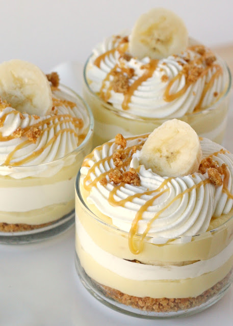

Banana Caramel Cream Dessert
Sweet, creamy and delicious… this Banana Caramel Cream Dessert is my new favorite treat!
This recipe starts with delicious homemade pastry cream, then fresh bananas, whipped cream, caramel sauce, and a graham cracker crust.Each element is pretty tasty on it’s own, but when layered together they create a truly amazing dessert!
Ingredients:
- 2 bananas I used two bananas for 6 small dessert servings
- Caramel sauce Good quality or dulce de leche.
- Fresh whipped cream I used 3/4 cup heavy whipping cream and 1 Tablespoon powdered sugar
- Vanilla Pastry Cream
- 2/3 cup sugar can be reduced to 1/2 cup if you prefer desserts less sweet
- 1/4 cup cornstarch
- 1/2 teaspoon salt
- 3 cups whole milk
- 2 eggs
- 2 tablespoons butter
- 1 tablespoon vanilla extract or 2 teaspoons vanilla extract and 1 teaspoon vanilla bean paste
- 1 1/2 cups graham cracker crumbs about 10 full sized crackers
- 1/3 cup butter melted
- 1 tablespoon sugar
Steps:
- In a medium bowl, beat eggs with a fork to combine. Set aside.
- Mix sugar, cornstarch and salt in a medium saucepan. Gradually pour in milk, while whisking, to make a smooth mixture. Cook over medium heat, stirring almost constantly, until the mixture thickens and boils. Continue to cook and stir one minute.
- Pour several tablespoons of the hot mixture into the bowl with the eggs and immediately stir well. Pour warmed egg mixture into the pan with the rest of the hot milk mixture. Return to a slow boil, and cook one minute, stirring constantly.
- Remove from heat and stir in butter and vanilla. Set aside to cool. When the pan has cooled, place in the refrigerator to fully cool. If desired, lay a piece of plastic wrap on the top surface of the pastry cream to prevent a skin from forming.
- Crush crackers in a large ziplock type bag. Pour crumbs, sugar and melted butter into a bowl and , stir until fully combined. Pour into a 9"x13" casserole dish and press into a even layer. Bake at 350*F for 10-12 minutes, until light brown. Allow to cool.
- Spoon about 2 tablespoons graham cracker crumble into individual serving dishes. Use a small glass to press the crumble into a firm layer (as pictured below).
- Add a layer of pastry cream into each dish. For easy assembly, fill a large ziplock type bag with the pastry cream, snip off the end and fill the dishes from this bag.
- Add a few slices of banana.
- Top bananas with a layer of whipped cream.
- Add some graham cracker crumble and a drizzle of caramel (scoop caramel or dulce de leche into a small ziplock bag and snip off the end for easy application).
- Repeat layers 2-5
- Serve immediately or refrigerate up to 3 hours. Top with a slice of fresh banana just before serving.